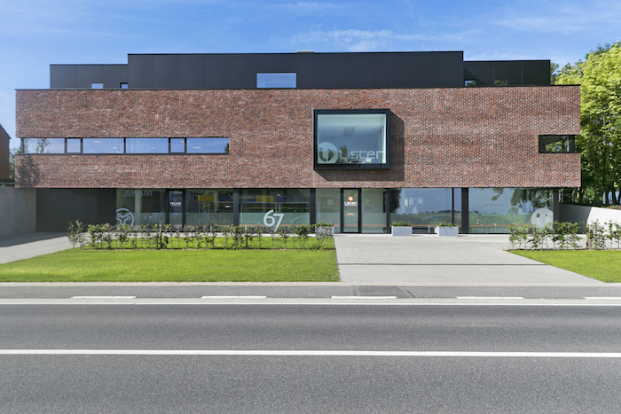

Développeur logiciel stagiaire
Immersion au sein d'une équipe qui conçoit des logiciels métier sur mesure. Cette expérience m'a appris à travailler dans un contexte professionnel, à comprendre un code existant et à livrer des évolutions utiles avec méthode.
- 01Développement d'une application liée aux bornes de recharge avec Spring Boot et Angular.
- 02Création et évolution d'API REST, échanges JSON et interfaces avec PrimeNG.
- 03Manipulation de données PostgreSQL et mise en place de communications WebSocket.
- 04Travail avec AWS, Git, Bitbucket et Maven dans un environnement d'équipe.
Photo et identité visuelle : Yelido.